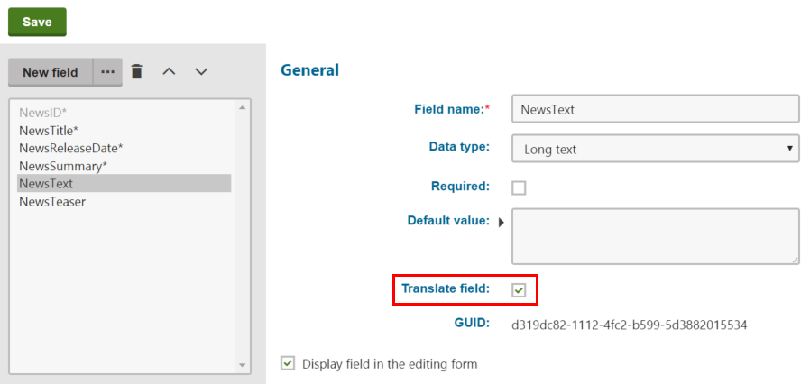

Configuring content for translation
Translation services can process the following types of page content:
Content of editable regions
Values of page fields (entered on the Form tab of the Pages application)
The properties of web parts and widgets placed on the given page
Page file attachments (without their image variants)
The system allows you to specify exactly which parts of the content are translated. These settings affect all types of translation services.
Configuring page fields
To choose which page fields are sent for translation, adjust the form definition of individual page types:
Open the Page types application.
Edit (
 ) a specific page type.
) a specific page type.Switch to the Fields tab.
Select the field that you wish to configure and enable or disable the Translate field flag. Translation is only available for fields with the Text, Long text or File Data type.
Click Save to confirm the changes to the field.

When users submit pages of the given type for translation, only the content of fields that have the Translate field flag enabled is included in the translation.
Kentico EMS required
Features described on this page require the Kentico EMS license.
Configuring web part and widget content
Pages may also contain text added via Web parts and Widgets. For translation of both web part and widget content you need to enable the Translate web part properties setting:
Open the Settings application and select the Content -> Translation services category.
Select the Translate web part properties check box.
Click Save.
Widget content is saved in each language version of a page in which the widget is added. If translation of widget content is enabled, the widget content is automatically included in page translations.
To translate web part content, you need to localize the corresponding web part property values. You can translate specific web parts properties automatically (this is suitable for web parts that add text onto the page directly, such as Static text):
Open the Web parts application.
Edit (
 ) the appropriate web part and switch to the Properties tab.
) the appropriate web part and switch to the Properties tab.Select or clear the Translate field check box for individual properties.
Translation is available only for properties that use one of the following Data types: Text, Long text, File
Click Save for every modified property.
If a page that contains the given web part is submitted for translation, the system includes the values of all properties that have the Translate field flag enabled and do not contain a macro expression. When importing the translation, the system creates a resource string for every translated property, containing the value in the target language. The original text values of the properties are replaced by localization macros, which insert the appropriate resource strings.
Editable text regions
Translation submissions always include the page content entered by users into Editable text web parts, regardless of the web part translation settings.
Allowing translation of page attachments
Human translation services allow users to submit file attachments for translation along with the main content of pages. To configure attachment translation for your website:
Open the Settings application and select the Content -> Translation services category.
Enable the Allow attachment translation setting.
Specify which types of files should be translated using the Translation attachments file types setting.
Enter a list of all allowed file extensions separated by semicolons (for example: txt;docx;pdf). Leave the setting empty to allow translation for all types of attached files.
Click Save.
Users can check the Translate attached files option when submitting pages for translation, and the system adds all allowed file attachments into the translation source. When the completed translation is imported, the translated file is attached to the appropriate language version of the page.
File format
The system adds file attachments directly into the XLIFF translation source as binary data encoded in Base64 format.